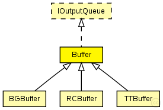

This documentation is released under the Creative Commons license
This documentation is released under the Creative Commons licenseAbstract base Buffer used for the various Buffers of TTEthernet. Since this is an abstract module please do not instantiate it
WARNING: Currently the out gate is not used. Instead the buffer sends its message via sendDirect to all via addDestinationGate() registred gates.
TODO: The Buffer module should be converted to an interface since it should not be used directly in simulation.
See also: IOutputQueue
Author: Till Steinbach
The following diagram shows usage relationships between types. Unresolved types are missing from the diagram. Click here to see the full picture.
The following diagram shows inheritance relationships for this type. Unresolved types are missing from the diagram. Click here to see the full picture.
| Name | Type | Description |
|---|---|---|
| BGBuffer | simple module |
Represents an abstract Buffer for background traffic. Messages are sent immediatly to the LLC |
| CTBuffer | simple module |
Abstract base Buffer used for critical traffic Buffers of TTEthernet. Since this is an abstract module please do not instantiate it |
| Name | Type | Default value | Description |
|---|---|---|---|
| destination_gates | string | "" |
Priority of the buffer (currently only used for rate-constrained traffic) int priority=default(-1); Critical traffic ID of the buffer int ct_id=default(0); Critical traffic marker of the buffer int ct_marker=default(0); Critical traffic mask of the buffer int ct_mask=default(0); Comma seperated list of gates where the frames of the buffer are delivered |
| Name | Value | Description |
|---|---|---|
| display | i=block/buffer |
| Name | Direction | Size | Description |
|---|---|---|---|
| in | input |
The buffers Input |
|
| out | output |
The buffers Output WARNING: CURRENTLY NOT USED! |
| Name | Title | Source | Record | Unit | Interpolation Mode |
|---|---|---|---|---|---|
| txPk | TX Packets | count, vector | |||
| latency | End-to-end latency | stats, histogram, vector | s |
// // Abstract base Buffer used for the various Buffers of TTEthernet. // Since this is an abstract module please do not instantiate it // // @warning Currently the out gate is not used. Instead the buffer sends its // message via sendDirect to all via addDestinationGate() registred gates. // // @todo The Buffer module should be converted to an interface since it should // not be used directly in simulation. // // @see IOutputQueue // // @author Till Steinbach simple Buffer like IOutputQueue { parameters: @display("i=block/buffer"); //Statistic of the amount of packets that were sent by the buffer @statistic[txPk](title="TX Packets"; record=count,vector); //End-to-end latency @statistic[latency](title="End-to-end latency"; unit=s; record=stats,histogram,vector); //Priority of the buffer (currently only used for rate-constrained traffic) // int priority=default(-1); //Critical traffic ID of the buffer // int ct_id=default(0); //Critical traffic marker of the buffer // int ct_marker=default(0); //Critical traffic mask of the buffer // int ct_mask=default(0); //Comma seperated list of gates where the frames of the buffer are delivered string destination_gates = default(""); gates: //The buffers Input input in @loose @labels(EtherFrame); //The buffers Output @warning CURRENTLY NOT USED! output out @loose @labels(EtherFrame); }
This documentation is released under the Creative Commons license